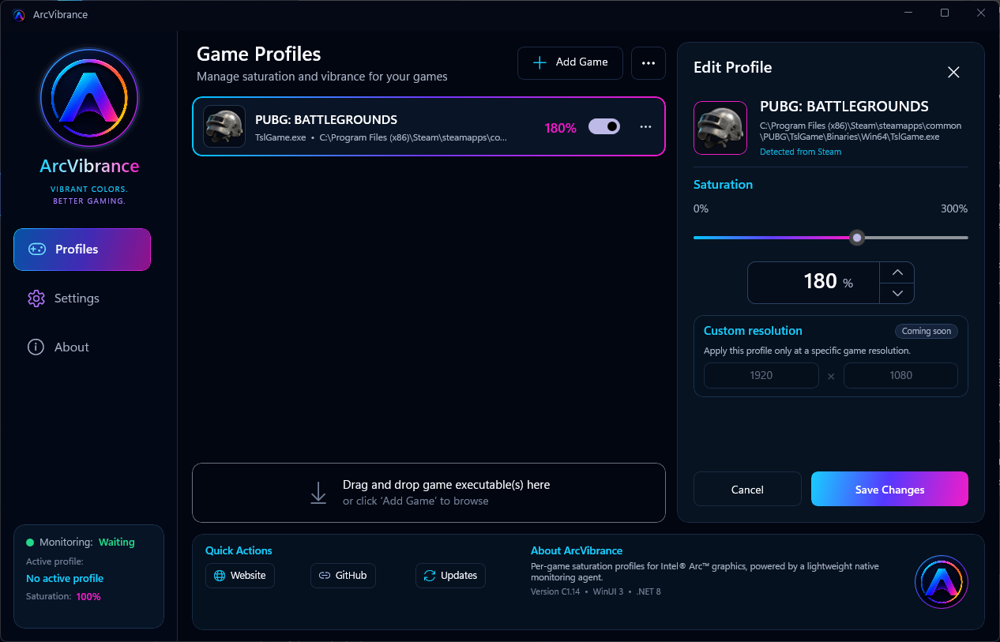

Per-game profiles
Give every game its own vibrance level. Profiles activate automatically and restore your desktop settings when the game closes.
VValorant64%
FHForza Horizon 558%
2077Cyberpunk 207772%
ArcVibrance automatically applies the perfect color vibrance profile when your game launches, then restores your desktop when you are done.

Set it once. ArcVibrance handles the rest every time you launch a game.
Give every game its own vibrance level. Profiles activate automatically and restore your desktop settings when the game closes.
Fine-tune vibrance with a simple, responsive slider from subtle enhancement to full saturation.
Runs quietly in your system tray with minimal CPU and memory usage.
Your original desktop settings are restored automatically, even after a game crashes.
No confusing driver menus. Create a profile, choose a vibrance level, and get back into your game.
Download, install, and let the app detect your Intel Arc GPU.
Select a game executable and choose your preferred vibrance level.
ArcVibrance detects the game and applies your profile automatically.
Use the slider to compare a natural desktop color profile with an enhanced ArcVibrance game profile.
ArcVibrance is built for Windows PCs with Intel Arc graphics.
Everything you need to know before installing ArcVibrance.
Yes. ArcVibrance is designed around Intel Arc graphics and provides automatic, per-game vibrance control.
No. ArcVibrance restores your normal desktop profile when the game closes.
Yes. Each game can have its own executable, vibrance value, and automatic activation setting.
It can run quietly in the system tray so it is ready whenever a configured game starts.